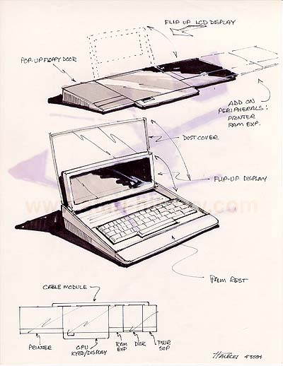

This concept takes an interesting
approach to a fold-down desktop system. Although its appearance is
that of a laptop, this system was meant to be more of a desktop system.
A very interesting note is the "Palm Rest" which was a concept first put
into production be Apple Computer in the early 1990's, however it appears
Atari's own Industrial Design group was well ahead of not only Apple but
the entire computer industry with this simple yet well touted ergonomic
feature. This concept off add-ons has a look that is reminiscent
of the Intellivision add-on design.